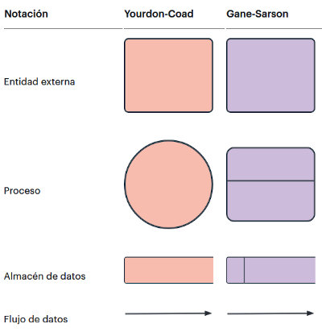
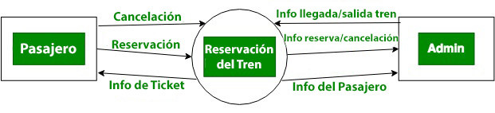
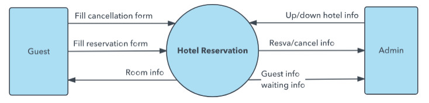
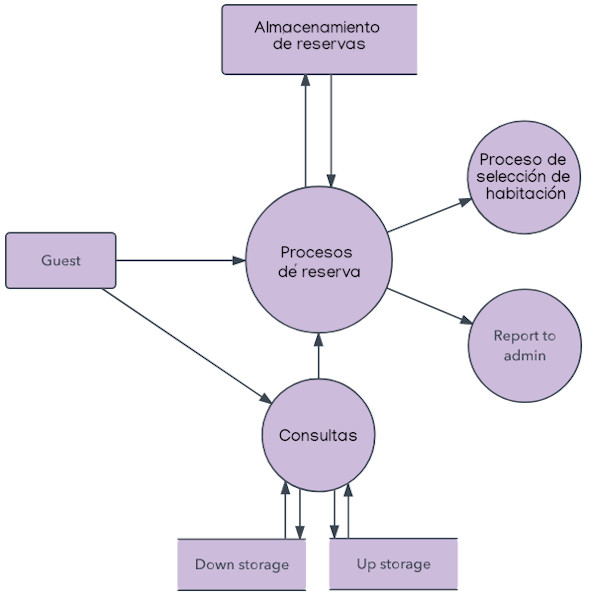
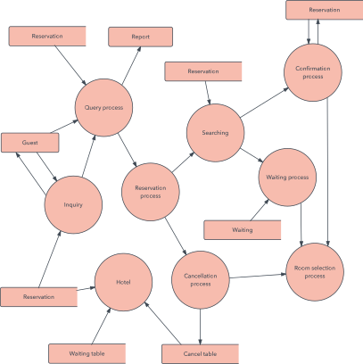

Un Diagrama de Flujo de Datos ( DFD ) traza el flujo de la información para cualquier proceso o sistema. Con el DFD se puede representar el futuro funcionamiento del programa a desarrollar.
Emplea símbolos definidos, como rectángulos, círculos y flechas, además de etiquetas de texto breves, para mostrar las entradas y salidas de datos, los puntos de almacenamiento y las rutas entre cada destino. Los diagramas de flujo de datos pueden variar desde simples panoramas de procesos incluso trazados a mano, hasta DFD muy detallados y con múltiples niveles que profundizan progresivamente en cómo se manejan los datos. Se pueden usar para analizar un sistema existente o para modelar uno nuevo. De forma similar a todos los mejores diagramas y gráficos, un DFD puede con frecuencia "decir" visualmente cosas que serían difíciles de explicar en palabras y funcionan para audiencias tanto técnicas como no técnicas, desde desarrolladores hasta directores. Esa es la razón por la que los DFD siguen siendo tan populares después de todos estos años.

Niveles de un DFD
Un DFD puede profundizar progresivamente en más detalle por medio de niveles y capas, concentrándose en una pieza en particular. Los niveles de un DFD se numeran 0, 1 o 2 y en ocasiones llegan incluso hasta el Nivel 3 o más. El nivel necesario de detalle depende del alcance de lo que estás tratando de lograr.
- Nivel 0: Diagrama de contexto
En el diagrama de contexto se caracterizan todas las interacciones que realiza un sistema con su entorno (entidades externas), estas pueden ser otros sistemas, sectores internos a la organización, o factores externos a la misma. Se dibuja un sólo proceso que representa al sistema en cuestión y se escribe su nombre en dicha burbuja como un sustantivo común más adjetivos. De él solamente parten los flujos de datos que denotan las interrelaciones entre el sistema y sus agentes externos, no admitiéndose otros procesos ni almacenamientos en el dibujo, ya que estos son procesos estructurados y ordenados. Está diseñado para ser una vista rápida que muestra el sistema como un único proceso de nivel alto, con su relación con entidades externas.

- Nivel 1: Diagrama de nivel superior
Brinda un desglose de piezas más detallado del diagrama a nivel de contexto. Se destacan las principales funciones que el sistema lleva a cabo.

- Nivel 2: Diagrama de detalle o expansión
Va un paso más allá, ya que empieza a desglosar y analizar secciones específicas del diagrama de nivel 1. Cuanto más profundos sean los niveles, más texto tendrá el diagrama. Por eso, muchos diseñadores de sistemas prefieren no ir más allá del nivel 2

Es posible el avance hacia los Niveles 3, 4 y más, pero ir más allá del Nivel 3 es poco usual. Hacerlo puede crear una complejidad que dificulte comunicar, comparar o modelar de forma efectiva.
más información: https://www.lucidchart.com/pages/es/que-es-un-diagrama-de-flujo-de-datos